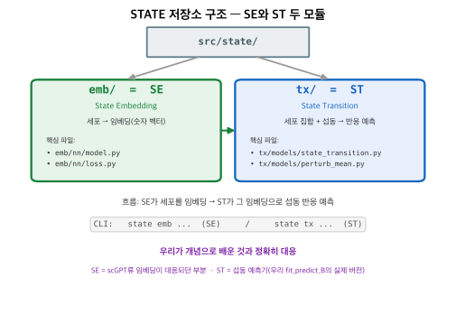
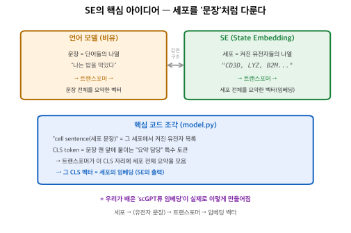
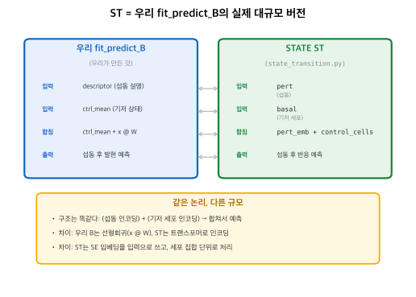

Arc STATE 저장소를 직접 열어 SE/ST 두 모듈이 실제 코드로 어떻게 생겼는지 확인한 기록. 세부가 아니라 '지도'를 갖는 게 목적.
원본 저장소: github.com/ArcInstitute/state

emb/=SE(세포 임베딩), tx/=ST(섭동 반응 예측). CLI도 state emb/state tx로 분리.

세포에서 켜진 유전자 목록을 "문장"으로 보고, 언어 모델처럼 트랜스포머로 처리. 맨 앞 CLS token 자리에 세포 전체 요약이 모여 → 그게 임베딩. (파일: emb/nn/model.py)

pert_embedding = self.encode_perturbation(pert) # 섭동 인코딩 control_cells = self.encode_basal_expression(basal) # 기저 세포 인코딩 combined_input = pert_embedding + control_cells # 합쳐서 예측
구조는 우리 B와 똑같다: (섭동)+(기저 세포)→합쳐서 예측. 차이는 선형회귀 대신 트랜스포머, SE 임베딩 입력, 세포 집합 단위. (파일: tx/models/state_transition.py)